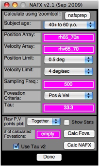
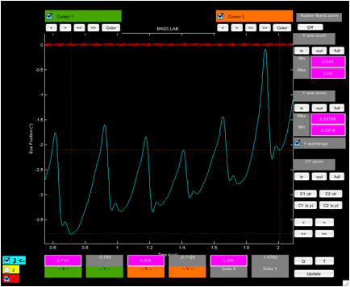
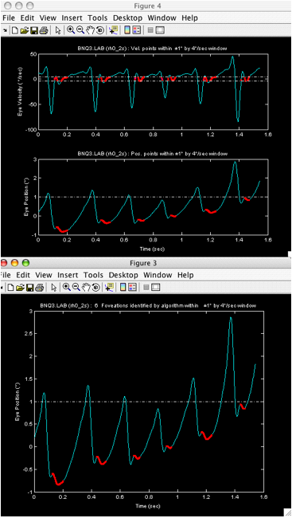
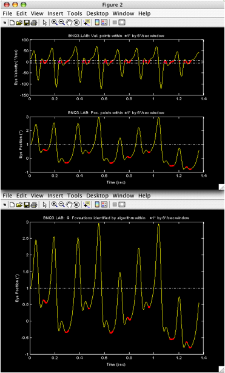
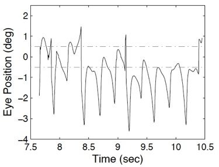
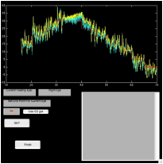
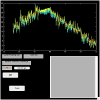
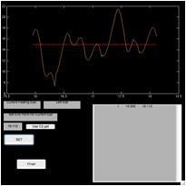
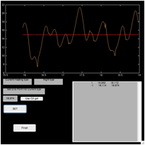

Using the NAFX for Eye-Movement
Fixation Data Analysis and Display
L.F.
Dell’Osso, Ph.D.
From the Daroff-Dell’Osso Ocular Motility Laboratory, Louis Stokes Cleveland DVA Medical Center and Depts. of Neurology and Biomedical Engineering, Case Western Reserve University, Cleveland OH, USA
OMLAB Report #111005
Written: 9/9/05; Placed on Web Page: 11/10/05; Last Modified: 11/13/14
Downloaded from: OMLAB.ORG
Send questions, comments,
and suggestions to: lfd@case.edu
This
work was supported in part by the Office of Research and Development, Medical
Research Service, Department of Veterans Affairs.
The
instructions in this tutorial are meant to supplement those in “nafx.txt” and
those in the “tutorials” folder, both of which are contained in the OMtools
folder. They are illustrated with examples to help the user in understanding
how to use some of the more important m-files in the OMtools software
downloadable from this site. Investigators are also advised to read, “Recording
and Calibrating the Eye Movements of Nystagmus Subjects” (OMLAB 011105). Note:
the m-files (or p-files) listed below as ‘filename’ actually refer to
‘filename.m’ (or ‘filename.p’) and the text files “filename” are in the folder
“OMtools/documentation/misc docs.”
Theory:
The NAFX and its
predecessor, the NAF, originated from the NFF that attempted to relate the
time-intervals of fp's and their position and velocity SD's to a measure of the
'quality' of a CN waveform (i.e., how likely it was to allow good acuity). When calculated by hand, each cycle was
assumed to have 1 fp and the # of cycles in the interval of interest was
included in the calculation. Later,
when the NAFX was automated, only 'true' fp's (i.e., those that satisfied the
foveation-window (FWIN) criteria) were used in the calculation. For waveforms that exhibited
well-developed foveation, this changed nothing. However, for poor foveation due to
excessive jitter or high velocities, many cycles were deemed to have no fp's
and the resulting NAFX reflected only those few fp's detected. This yielded NAFX values that were not
likely to be well correlated with acuity.
To overcome this shortcoming, a measure of the total number of potential
fp's (or cycles) needed to be reintroduced. That was most easily accomplished by
applying the NAFX as described below. In addition, the NAFX vs. acuity line has
been made age-specific to reflect the variation of visual acuity with age (a
canine line is also included). If the nystagmus is multiplanar the NAFX can be
used on data that has been converted to a radial vector array (see APPENDIX A).
Because the NAFX
is a measure of the foveation quality that is meant to be predictive of the
best-corrected visual acuity of a person with nystagmus, it must be applied to data from the fixating eye; the “foveation
quality” of an occluded or otherwise non-fixating eye has no meaning in this
context. Therefore, the data used must have been monocularly calibrated or, in
the case of uniocular recordings, been taken with the other eye occluded. For
truly binocular individuals, the monocularly calibrated data from the two eyes
will overlap when both eyes are viewing (especially the foveation periods and
the target) and the data from either eye can be used to calculate the NAFX
(this should never be presumed, even
when recording subjects thought to be “normal”). However, many with nystagmus
may also have strabismus and alternate their fixating eye. In these cases, care
must be taken to calculate the NAFX only from the fixating eye data; that may
necessitate using data from one eye while fixating at one target angle and the
other eye when at another target angle. Identifying the fixating eye from the
data of both eyes is an easy task when the data have been monocularly
calibrated (see OMLAB Report #011105). Using our paradigm, we allow 5 seconds
at each target angle and repeat each twice (once while stepping out in 5°-steps
from primary position to 30° and once while stepping back to primary position).
For most individuals with nystagmus, that is sufficient to allow target
acquisition (0.5 – 2 sec) and leaves approximately 3 seconds of steady
fixation from which the NAFX may be calculated. This mimics the time sequence
of fixating a new target under normal conditions.
There are rare
individuals however, for whom: a) 5 seconds is not enough time; b) there is
constant, rapid reversal of the fixating eye; or c) both a and b apply. The
first case merely requires presenting each target for longer than 5 sec. Cases
of rapid reversal of the fixating eye require careful identification of the
small intervals for each fixating eye within the interval of steady fixation
being analyzed and using a concatenation of those intervals to calculate a
“fixating eye” NAFX (see Appendix B). For the remainder of this report we will
presume the fixating eye is constant for the 5-second interval.
Method and Criteria:
Much of the
repetitive work in the previous methodology has been automated by 'nafxprep'
used in conjunction with the graphical interface for NAFX
1. Filter data
using, 'r/lh=lpf(r/lh,4,20,samp_freq)'
NOTE:
Since, when using its graphical interface, the nafx function needs rh or lh,
rhf
or lhf can no longer be used for filtered data. Here, we are filtering at 20
Hz;
for
noisy data 15 or 10 Hz can be used.
NOTE2:
The latest “rd” function offers the option to pre-filter and differentiate the
data; if this option is used, no additional filtering or differentiation is
required and you may begin at step 2.
2. Run 'nafx'
and the GUI for v2.1 in Figure 1 will appear.
Figure 1. The GUI for the NAFX v2.1 program. The
first command ‘button’ is “nafxprep.” It is used in conjunction with zoomtool
to automatically set the Position and Velocity sub-arrays for the fixation
interval you choose. First, use “Subject age:” (drop-down menu) to set in the
subject’s age. The “Position Limit:” is automatically set based on the “Delta
Y” difference shown in zoomtool for the second set of position cursors (you may
also set in a different value from the drop-down menu). The minimum is 0.5°
(the foveal radius) and the maximum is 6° in 12 steps. When you set the
“Velocity Limit:” (drop-down menu), start at 4°/sec and increase in 1°/sec
steps until a foveation period is detected for each nystagmus cycle or you
reach 10°/sec (the maximum value for the velocity of the foveation window. The
“Sampling Freq:” is automatically detected and set from the loaded data.
“Foveation Criteria:” (drop-down menu) should be set as shown. “Tau:” will be
automatically set based on you foveation-window position and velocity choices.
The “Calc Fovs.” button will calculate foveation periods and print out several
graphs. We usually set “Raw P,V points plot:” (drop-down menu) to “Together”,
leave “Show Stats” unchecked, and “Use Tau v2” checked. “Calc NAFX” is the
final command button and “Done” closes the program.
3. Choose the age range appropriate for
the subject; this will customize the potential visual acuity predicted by the
NAFX based on population statistics for visual acuity.
4. Plot the
filtered data using an appropriate command (e.g., ‘plth’ or ‘pltv’).
5. Use
'zoomtool' on the filtered data to be analyzed and eliminate all data traces
except the one being analyzed.
6. Home in on
the segment you wish to analyze with the cursors and the X-axis zoom “in”
button.
7. Place the cursors
at the start and end of the sub-array you wish to use.
NOTE: To ensure that your interval
contains an integral number of cycles
(and that no foveation periods are
truncated), begin all intervals during
a
slow phase (away from a foveation
period) and end all intervals at an
equivalent point in a slow phase.
8. Click on the “C1 get” and “C2 get” buttons (in
earlier versions of ‘zoomtool’—as shown in Figure 2—they were “C1 (xy)” and
“C2 (xy)”).
9. Place the
cursors at the highest and lowest peaks* of the foveation periods. Figure 2
demonstrates what this looks like.

Figure 2. Plot (‘zoomtool’) showing the fixation
interval with cursors set at the highest and lowest extents of the six
foveation periods in the interval.
10. Click on the
“C1 get”/”C1 (xy)” and “C2 get”/”C2 (xy)” buttons.
11. Run
“nafxprep” from the GUI (Figure 1).
You
will be prompted to enter the data file name (e.g., lh or rh) if more than one
data file was plotted.
12. All
sub-arrays and bias shifts will be created and entered into the NAFX GUI.
11. The
foveation position window will automatically appear as the “Position Limit:”
setting. You may also manually enter a different foveation position window from
the “Position Limit:” drop-down menu whose ±value
encompasses the cursors' Y interval (as indicated by the “Delta Y” value in the
‘zoomtool’ plot).
NOTE:
Available position window sizes are: 0.5, 0.75, 1.0, 1.25, 1.5, 2, 2.5, 3,
3.5,
4, 5, and 6 (for canines use 3 for horizontal data and 1.5 for vertical data).
In
this
example, “Delta Y” is 1.6762 requiring a window size of 1
(i.e.,
±1=|2|>1.65762).
13. With the “Velocity
Limit:” value set at 4 deg/sec, run the “Calc Fovs.”
('showpv') and verify that all foveation periods were counted (i.e., at least
1foveation period per cycle).
14. If any
cycles were missed, increase the velocity window (as indicated by the “Velocity Limit:” value) and rerun “Calc Fovs.” until all
cycles are counted or you reach 10 deg/sec.
NOTE:
Available velocity window sizes are: 4, 5, 6, 7, 8, 9, and 10. Figure 3
shows
the first two graphs produced by ‘showpv’.
15. Run the
“Calc NAFX” using #fovs as defined below.**
16. Copy all
relevant commands from the command window to a text file to document your work
and to provide an easy way to repeat it (see NOTE below).
17. Run
'xaxshift(nafx_start)' on any Figures you wish to print and then, print them.
* You could use
the horizontal cursor lines to straddle the foveation positions if you stay
within the start and stop points.
** If “Calc
Fovs.” ('showpv') detects >=1fp/cy, use the number of CYCLES as the #fovs
i.e., "#fovs" = #cy's
(#fps - #extra fps detected)
If “Calc Fovs.”
('showpv') misses any cycles (i.e., no fp detected) choose the pos limit of
FWIN just large enough to
encompass all fp's in the interval to be used
(1 fp per cycle)
Then choose the LOWEST vel limit
of FWIN (velLim) that allows 'showpv' to
detect 1fp/cy or, increase the
velocity limit to the LOWEST value that
MAXIMIZES the # of fp's detected
and use
"#fovs" = #cy's w fp + #cy w/o fp or joined cycles within a fp
(#cy's
w fp = #fps - #extra fps detected)
NOTE:
The output of
the NAFX to the command window of Matlab includes all the necessary data
information and explicit NAFX command lines to reproduce the analysis easily.
They should be copied and kept in a text file that can be used for this purpose
at a latter date without using zoomtool to define the interval and extent of
the foveation positions. All that need be done is to copy the appropriate Matlab
command lines (use those with ">>") from the text file to the
command window. An example from NAFX (version 1.1)* is shown below for a 49 y/o
subject. Use 'help nafx' for information regarding the NAFX command lines.
* Later NAFX versions
produce additional output lines that may be copied to the text file.
Text File
Data:
>>
rh=lpf(rh,4,20,500);**
rhv=d2pt(rh,3,500);**
>> rh45_46
= sub(rh, 45.524, 1.362);
rh45_46s =
rh45_46 + 3.2905;
rhv45_46 =
d2pt(rh45_46, 3);
>>
nafx(rh45_46s,rhv45_46,500,[1,6],'showpv',1);
** These two
lines not used if “rd’s” pre-filtering and differentiation are used.
Figure 3. Outputs of ‘showpv’.
(Top)
Velocity and position traces with all points satisfying the foveation window
criteria (dot-dashed lines) shown in red. (Bottom) Position trace with
algorithm-determined foveation periods shown in red.
Enter the
subject's age:
1) under 6 years
old
2) from 6 to 12
years old
3) from 12+ to
40 years old
4) from 40+ to
60 years old
5) greater than
60 years old
6) A dog of any
age
--> 4
% Display
foveation statistics (y/n)? n
Total time that
meets position criterion = 994 msec. (497 samples)
Total time that
meets velocity criterion = 278 msec. (139 samples)
Total time that
meets both criteria = 264 msec. (132 samples) [raw]
Total time that
meets both criteria = 190 msec. (95 samples)
There were
(probably) 9 foveation periods in this interval.
Cycles by manual
count: 8 [manually entered by you]
>>
nafx(rh45_46s,rhv45_46,500,8,'nafx',[0,1,6]);
Enter the subject's
age:
1) under 6 years
old
2) from 6 to 12
years old
3) from 12+ to
40 years old
4) from 40+ to
60 years old
5) greater than
60 years old
6) A dog of any
age
--> 4
results: (using
NAFX vers. 1.0, DetectFovs vers. 1.0)
NAFX = 0.279 (<=
20/59) -- 40+ to 60 years old
Fov. time per
fov. period = 23.8 msec
Fov. time per second =
0.14 sec
STD(pos, vel) = (0.464 deg, 3.38 deg/sec)
Fov. window (pos, vel): (1
deg, 6 deg/sec)
tau: 50.4 msec
Figure 4. Outputs of ‘showpv’. (See
legend of Figure 3 for details.) Note that algorithm detected 9 foveation
periods in the 8 cycles; to calculate the NAFX, 8 will be used.

APPENDIX
A
For individuals whose
nystagmus is biplanar, two approaches are possible. First, for those whose
horizontal component far exceeds their vertical component (as is the case in
INS), simply calculate the NAFX using only the horizontal data. One can verify
this choice by calculating two NAFX’s, one using the horizontal data and the
second using the vertical data. The “horizontal” NAFX will be seen to be the
acuity-limiting (i.e., lower) value. Of course, if the vertical component is
far greater than the horizontal component (rare in INS), use the vertical data
to calculate the NAFX. What of individuals whose nystagmus contains two
significant components? For those cases, we have developed the two-dimensional
NAFX. (1) By the use of the OMtools function, ‘hv2r’ we
calculate a vector combination of the horizontal and vertical components that
retains direction information and use it to calculate the “radial” NAFX. Figure
5 is a plot of a “radial” vector array. Note the discontinuities that should
not be mistaken for saccades.

Figure 5. A plot of a “radial” data array for
two-dimensional NAFX analysis.
APPENDIX B
For the rare individuals
who constantly alternate their fixating eye, there may not be intervals with either eye fixating that
are long enough (≥1 second) to calculate a meaningful NAFX. For the NAFX to
maintain its relationship to visual acuity, it must be calculated using data taken
from the fixating eye. How can this be achieved? Using ‘zoomtool’ one can
easily determine the beginnings and endings of each interval of fixation for
both the right (rh) and left (lh) eyes. These intervals (whose endpoints are
chosen to lie in the slow phases away from intrinsic saccades or foveation
periods) can be used to define sub-arrays from the data for each eye (rh or lh)
and those sub-arrays can then be concatenated using ‘cat’ to form a new data
array that we shall call “fe” (for fixating eye). A new OMtools function,
‘fecat’ can be used to graphically choose each interval and automatically
concatenate them (see APPENDIX C). The discontinuities at each of the
concatenation points will not affect the NAFX calculation, as they will fall
outside of the foveation window. Finally, the NAFX can be calculated using the
data in fe. This construct mimics the actual real-world conditions of fixation
for that individual, including the times lost during each alternation of the
fixating eye, and the resulting NAFX will retain its relationship to visual
acuity.
APPENDIX C
Although one
could manually use ‘zoomtool’ and create sub-arrays that are then concatenated
(using ‘cat’), we have written a graphical program, ‘fecat’ that automatically
does this, producing a data file and graph ready for use by ‘nafx’. After
loading the data to be analyzed (rh and lh), one has only to type, ‘fecat’. A
GUI is opened as well as a ‘zoomtool’ window of the data (move the latter so
both are visible—see Figure 6).
1) In the ‘fecat’
GUI, choose the first fixating eye
2) In
the ‘zoomtool’ window, use “Xaxis zoom” to expand the data interval
of interest (e.g., fixation at 20°)
3) Set
the first cursor on the fixating eye
trace at the beginning of its first interval (pick a point during a
slow phase away from either an intrinsic saccade or foveation period) and click
on “C1 get”
4) In
the ‘fecat’ GUI, click on “Use C1 get” and click on “Begin”
5) In
the ‘zoomtool’ window, set the second
cursor on the fixating eye trace at the end of this first interval
(i.e., when the fixating eye alternates to the other eye—use the same
slow-phase criteria for choosing this point as for all NAFX intervals) and click
on “C2 get”
6) In
the ‘fecat’ GUI, click
on “Use C2 get” and click on “Set” (a plot of this interval will appear in the
‘fecat’ GUI)
7) In the
‘zoomtool’ window move the second
cursor on the new fixating eye trace to the end of the second interval and
click on “C2 get”
8) In the
‘fecat’ GUI, click on “Use C2 get” and click on “Set” (a plot of this now
expanded interval will appear in the ‘fecat’ GUI)
9) Repeat
7&8 as often as necessary to build a fixating-eye data array
for analysis
10) Click on
‘Finish’ (a plot of the fixating-eye data array will be placed in a Figure,
ready for NAFX analysis)
NOTES: 1. The first cursor is only used to mark the
beginning of the first interval; all other intervals are determined using the second cursor. 2. There will be small
discontinuities at each transition point from one fixating eye interval to
another (see Figure 6, bottom right). They will not interfere with the NAFX
calculation and should not be mistaken for saccades. 3. The text box is
editable and can be used to change or enter specific start and stop points for
either eye (first number indicates eye—1=re, -1=le). Click outside the
text box (within the GUI) to read in your changes.
 


Figure 6. The ‘fecat’ GUI—top left)
initial appearance; top right) after using “C1 get”; bottom left) after using
“C2 get”; and bottom right) after using “C2 get” again.
REFERENCES
1. Jacobs JB, Dell'Osso LF. Extending the expanded nystagmus acuity function for vertical and multiplanar data. Vision Res 2010; 50:271-278.
Citation
Although the
information contained in this paper and its downloading are free, please
acknowledge its source by citing the paper as follows:
Dell’Osso, L.F.: Using the NAFX for Eye-Movement Fixation Data Analysis and Display. OMLAB Report #111005, 1-12, 2005 [Update: 11/13/14]. http://www.omlab.org/Teaching/teaching.html
Note: This report was originally numbered as #090905 (date written) and was
corrected to #111005 (date posted) on February 7, 2008.